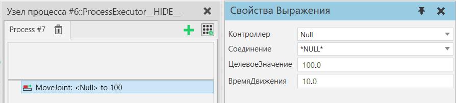

|

Оператор Переместить соединение позволяет перемещать соединение на заданное целевое значение с течением времени. Вы можете двигать только одним соединением за раз. Соединение должно быть связано с контроллером и находиться в том же компоненте, что и исполнитель процесса. Выполнение строки оператора завершится, когда движение будет завершено.
Примечание: Оператор позволяет сервоприводу выходить за его пределы (если не включен Остановиться при превышении ограничения на вкладке «Программирование»).
Свойства
Название
|
Описание
|
Контроллер
|
Контроллер, которому принадлежит соединение. Это может быть сервоконтроллер или производный контроллер, например контроллер робота. Это поведение должно быть на том же компоненте, что и исполнитель процесса, выполняющий эту инструкцию.
|
Соединение
|
Сустав для перемещения. Это можно выбрать после выбора контроллера.
|
ЦелевоеЗначение
|
Выражение для целевого значения.
Примечание: Должен оцениваться как действительный или целочисленный результат.
Смотрите также Выражения оператора процесса .
|
ВремяДвижения
|
Выражение для времени движения. Это поле можно оставить пустым, чтобы контроллер мог спланировать движение.
Примечание: Если не оставлено пустым, это выражение должно оцениваться как действительный или целочисленный результат.
Смотрите также Выражения оператора процесса .
|
|